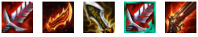

Advanced Compositions!
Calculate Difficult to Execute Composition
Select Main Carry
Tips
1.We recommend these items for Draven Carry
|  |
2.Forgotten compositions lack frontline, low roll to develop units if too weak
3.Use Ziggs as an item holder in the early game, transitioning from Hellion Comp